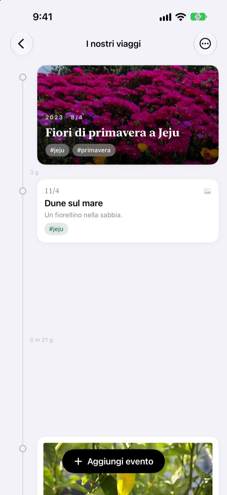
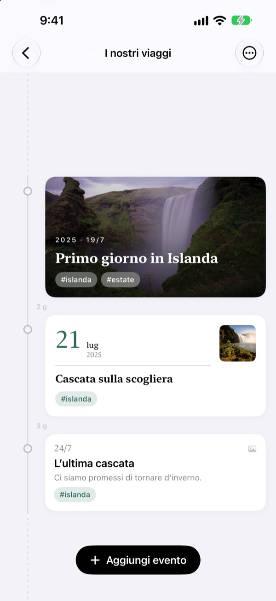
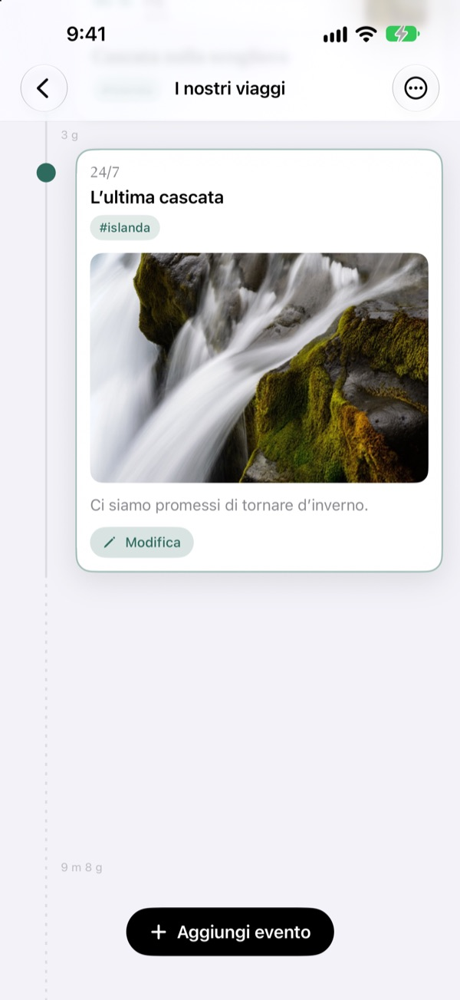
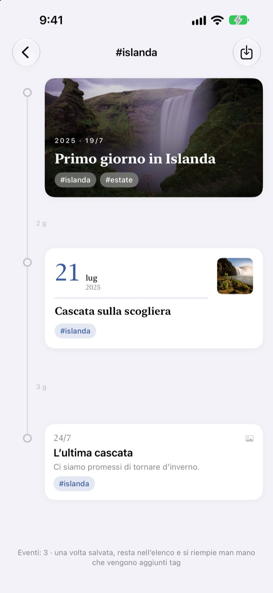
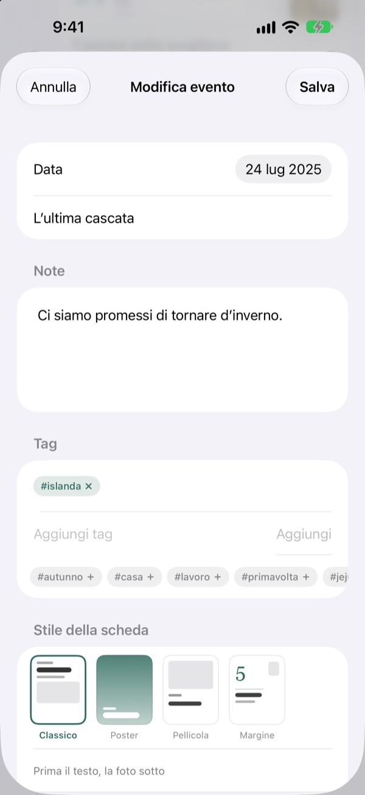

Una timeline
che si allunga col tempo
Tre giorni e cinque giorni stanno a 3:5. Una lunga pausa, come due anni e quattro mesi, si ripiega in una linea tratteggiata. Basta guardare le distanze per capire com'è passato il tempo.
Tutte le funzioni sono gratuite. Per iPhone e iPad.

Allarga le distanze tu stesso
Ogni pulsante aggiunge un evento dopo l'ultimo. Le distanze seguono la stessa regola dell'app.
La libreria foto non ti mostra il tempo
La libreria mette tutto in fila per data, ma tre giorni e due anni occupano lo stesso singolo passo. Yeoul distanzia gli eventi in base al tempo trascorso tra loro, così vedi a colpo d'occhio i periodi pieni e quelli vuoti.
La distanza è il tempo
Una sola scala per tutta la timeline: lo stesso periodo ha la stessa lunghezza in ogni punto dello schermo. Ogni distanza riporta la durata reale, come 3 g o 5 m 21 g.
Gli eventi vicinissimi hanno comunque un po' di spazio, e le pause lunghissime si ripiegano in una linea tratteggiata.

Trova le foto di quel giorno
Scegli la data dell'evento e tocca Trova foto correlate per vedere gli scatti di quel giorno. Nessuna ti convince? Con Cerca da solo scegli tu.
Tocca un evento nella timeline e foto e testo si aprono proprio lì.

Un tag riunisce i momenti sparsi
Aggiungi un tag come #Islanda, toccalo, e tutti gli eventi che lo portano, da tutte le timeline, si riuniscono in una nuova.
Salvala: resta nella tua lista e accoglie da sola i nuovi eventi con quel tag.

Per ogni momento, la scheda giusta
Classico mette il testo al centro, Poster riempie la scheda con la foto, Pellicola la incornicia come una stampa, Margine lascia la scena a una grande data. L'anteprima cambia appena scegli.

Si parte in tre passi
- 1
Crea una timeline
Il primo anno di tuo figlio, una storia d'amore, un viaggio: per ognuna un nome e un colore.
- 2
Aggiungi eventi
Scrivi data e titolo, poi allega una foto di quel giorno.
- 3
Aggiungi i tag
Gli eventi con lo stesso tag si ritrovano insieme, anche da timeline diverse.
Quattro design di scheda
- Classico
- Il testo in primo piano, la foto sotto.
- Poster
- La foto riempie la scheda e sopra c'è un grande titolo. Senza foto, si colora con il colore della timeline.
- Pellicola
- Una foto con bordo come una stampa, scrittura da macchina da scrivere e timbro della data.
- Margine
- Un grande numero della data e una foto piccola. Qui le parole sono protagoniste.
Un nuovo evento parte con il design della scheda più recente della sua timeline.
Tutte le funzioni sono gratuite
Gratis
- Tutte le timeline che vuoi, con nome e colore
- Foto, testi e tag per ogni evento
- Trovare le foto del giorno dell'evento
- Timeline per tag salvate
- Quattro design di scheda
- Sincronizzazione iCloud tra iPhone e iPad
- Registrare con Comandi rapidi e Siri
Sostieni lo sviluppatore
- Scegli una mancia piccola, media o grande
- Non sblocca nulla. È solo un modo per dire grazie
La trovi nelle impostazioni dell'app, quando ti va.
Niente pubblicità, niente abbonamenti.
Domande frequenti
Perché le distanze tra gli eventi sono tutte diverse?
Yeoul distanzia gli eventi in base al tempo davvero trascorso. Tutte le distanze usano la stessa scala, quindi tre giorni e cinque giorni stanno a 3:5. Gli eventi vicinissimi mantengono una distanza minima per non sovrapporsi, e le pause lunghissime si ripiegano in una linea tratteggiata con la durata reale, come 2 a 4 m.
Non vedo le foto di quel giorno.
Per cercare le foto per data serve l'accesso alle foto. Consentilo in Impostazioni > Yeoul > Foto. Yeoul cerca gli scatti fatti da mezzanotte a mezzanotte di quel giorno, nel fuso orario del dispositivo. Se preferisci non dare l'accesso, tocca Cerca da solo subito sotto.
Cos'è una timeline per tag?
Tocca il tag di un evento e Yeoul riunisce in una sola timeline tutti gli eventi che lo portano, da tutte le tue timeline. Quelle che guardi spesso puoi salvarle nella lista. Non viene copiato nulla: se modifichi l'evento originale lo vedi anche qui, e se elimini la timeline per tag gli eventi restano.
Perché non posso aggiungere eventi in una timeline per tag?
Una timeline per tag è una vista raccolta per tag, non un contenitore: non si potrebbe sapere a quale timeline appartiene il nuovo evento. Aggiungilo nella sua timeline con il tag e comparirà qui da solo.
Posso registrare qualcosa senza aprire l'app?
Sì. Usa Registra un evento nell'app Comandi rapidi o con Siri e scegli solo timeline e titolo. Senza data, viene usata l'ora attuale.
Vedo le mie timeline anche su altri dispositivi?
Sì, su ogni iPhone o iPad collegato a iCloud con lo stesso account Apple. Controlla in Impostazioni > il tuo nome > iCloud che iCloud sia attivo. A seconda della connessione, può volerci qualche istante.
Come elimino i miei dati?
Scorri una timeline verso sinistra nella lista oppure tocca Modifica. Eliminando una timeline si eliminano anche i suoi eventi. Ciò che resta su iCloud puoi cancellarlo dalla gestione dello spazio nelle impostazioni di iCloud.
Lo sviluppatore vede i miei dati?
No. Eventi e foto restano solo sui tuoi dispositivi e nel tuo iCloud, e lo sviluppatore non può vederli. Tutti i dettagli sono nell'informativa sulla privacy qui sotto.
Come segnalo un bug o propongo un'idea?
Direttamente dalle impostazioni dell'app, via email o su Instagram a @lee25_ios. Modello del dispositivo, versione di iOS e cosa è successo ci aiutano a risponderti prima.
Domande o suggerimenti? Scrivi a leeo@kakao.com.